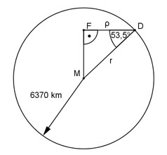

Aufgabe 118 Hamburg liegt auf dem 53,5 ten Breitengrad. Berechnen Sie dieLänge l des dazu gehörigen Breitenkreises, die Geschwindigkeit v von Hamburg durch die Erddrehung und die Länge b einer Winkelminute auf dem Breitenkreis. Erdradius = 6 370 km.

Im Dreieck MDF: ρ cos 53,5° = --- |*r r ρ = r * cos 53,5° = 6370 km * 0,5948 = 3 788,9 km l = U = 2 * ρ * π = = 2 * 3 788,9 km * 3,14 = 23 794,3 km Eine Drehung der Erde in 24 h. l 23 794,3 km v = ------- = --------------- = 991,4 km/h 24 h 24 h Der Breitenkreis entspricht 360°. 360° entsprechen 360 * 60 = 21 600 Winkelminuten. 23 794,3 km b = --------------- = 1,1 km/’’ 21 600’’